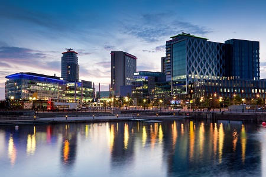
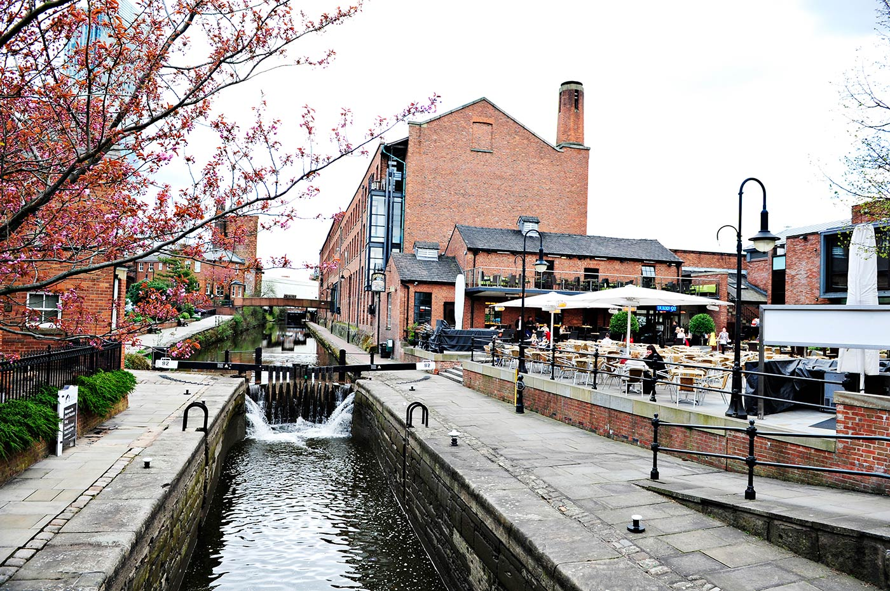
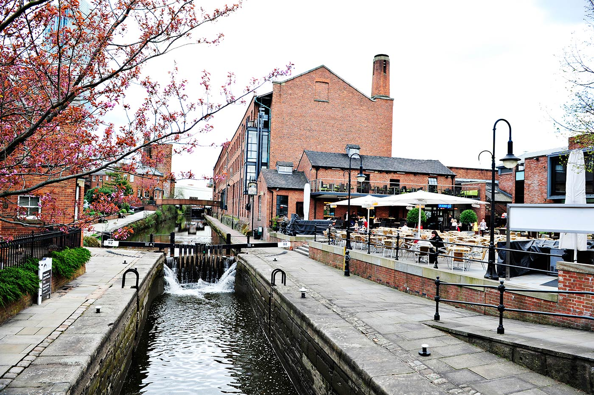
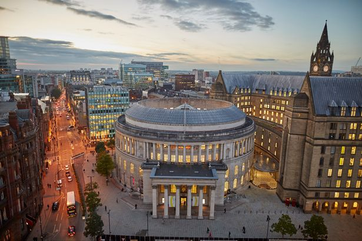
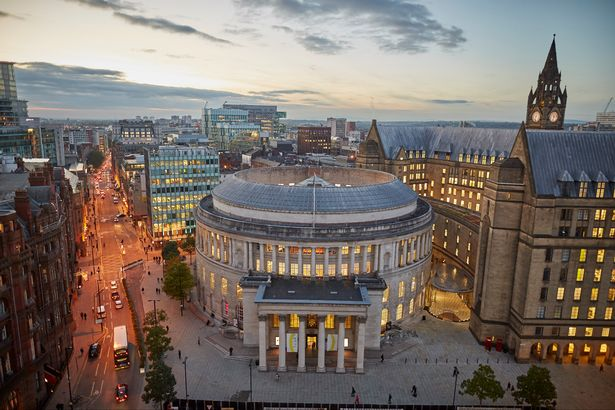

Manchester
Bienvenue à Manchester
Douée d’une forte ambition et fière de ses nombreux atouts, Manchester est – de part son histoire et sa géographie – la deuxième ville d’Angleterre (devant Birmingham). Mais si vous demandez à un Mancunien ce qu’il pense d’être second, il vous répondra sûrement : “Je ne sais pas, demandez à un Londonien”. Au-delà de cet esprit de fanfaronnade, la capitale sans couronne du Nord mérite amplement son titre. Riche en histoire et en culture, elle offre d’innombrables musées et galeries.
Et outre un patrimoine intéressant, c’est une ville où l’on ne s’ennuie pas : venez dîner, boire, danser et vous laisser emporter dans un tourbillon d’hédonisme, l’une des plus précieuses caractéristiques de Manchester.
Les lieux à visiter
-
Manchester Art Gallery
Une superbe collection d’œuvres d’artistes britanniques et d’un grand nombre de maîtres européens est exposée dans cette excellente galerie, la meilleure de la ville. L’aile la plus ancienne présente une sélection impressionnante, dont 37 aquarelles de Turner, ainsi que la plus grande collection d’œuvres préraphaélites du pays. La partie plus récente abrite des œuvres d’artistes britanniques du XXe siècle comme Lucien Freud, Francis Bacon, Stanley Spencer, Henry Moore et David Hockney, entre autres. La Gallery of Craft & Design, dans l’Athenaeum, expose une collection permanente d’œuvres du début du XVIIe siècle, principalement des maîtres néerlandais et du début de la Renaissance.
-
National Football Museum
La Grande-Bretagne est le berceau du football et Manchester le siège des deux clubs les plus populaires et les plus riches du monde. Idéalement situé, ce musée à grand succès retrace l’évolution du football britannique, depuis ses débuts jusqu’au phénomène aux millions d’euros d’aujourd’hui. Avec Football Plus, testez vos compétences en situation simulée dans une série de stations interactives ; achetez un crédit (2,50 £ l’unité, 9 £ les quatre) et tentez votre chance – déconseillé aux enfants de moins de 7 ans.
-
People’s History Museum
L’histoire des 200 ans de marche vers la démocratie de la Grande-Bretagne est présentée dans toute sa souffrance dans ce superbe musée, installé dans une ancienne station de pompage édouardienne. Pointez au 1er étage (littéralement : compostez votre carte dans une ancienne horloge de l’usine, notoirement trafiquée par les directeurs pour que les employés travaillent plus longtemps) et plongez-vous au cœur de la lutte britannique pour les droits démocratiques fondamentaux, la réforme du travail et les salaires justes.
-
John Rylands Library
Ressemblant davantage à une cathédrale du livre qu’à une bibliothèque, ce magnifique bâtiment de Basil Champneys est un exemple d’architecture gothique victorienne à couper le souffle, en particulier la salle de lecture, avec ses hauts plafonds voûtés et ses vitraux. La collection d’anciens livres imprimés et de manuscrits rares est tout aussi impressionnante. Elle comprend une Bible de Gutenberg, le plus ancien texte du Nouveau Testament toujours existant et le deuxième plus grand ensemble du pays de travaux du premier imprimeur britannique, William Caxton.
-
Museum of Science & Industry
Tout ce que vous avez toujours voulu savoir sur la révolution industrielle (et postindustrielle), et le rôle clé joué par la ville de Manchester, est présenté dans cette collection de machines et locomotives à vapeur, de machines d’usines textiles, et dans l’excellente exposition qui relate l’histoire de Manchester.
Découvrez la beauté de Manchester



 

 
